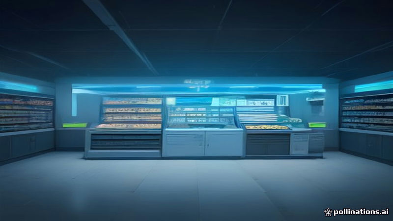

ফ্রান্স ইরানের বিপ্লবী গার্ডকে সুপারমার্কেট ফ্রিজ হ্যাকের দায়ী করেছে
Al Jazeera English, France 24, DW · 2026-11-10
AI-generated illustrationফরাসি পররাষ্ট্র মন্ত্রী জঁ-নোয়েল বারো বলেছেন ইরানের আইআরজিসি সুপারমার্কেটের রেফ্রিজারেটর হ্যাকের পেছনে, ফলস্বরূপ পরিণতি আসবে।
ফরাসি পররাষ্ট্র মন্ত্রী জঁ-নোয়েল বারো ইরানের ইসলামিক রেভোলিউশনারি গার্ড কর্পসকে ফ্রান্সের সুপারমার্কেটের রেফ্রিজারেটর ও ফ্রিজার হ্যাকের জন্য দায়ী করেছেন। তিনি এই সাইবার আক্রমণকে অপ্রতিদ্বন্দ্বী বলে উল্লেখ করে ইরানের ওপর পরিণতি আসবে বলে সতর্ক করেছেন।
আল জাজিরা ইংলিশ, ফ্রান্স ২৪ এবং ডি ডব্লিউ এই অভিযোগের প্রতিবেদন দিয়েছে, যেখানে ফরাসি সরকার হ্যাকের পেছনের দেশের জন্য ফলস্বরূপ শাস্তি জানাবে বলে উল্লেখ করেছে। কর্তৃপক্ষ সরবরাহ শৃঙ্খলে প্রভাব মূল্যায়নের জন্য তদন্ত চালিয়ে যাচ্ছে।
Read the original reporting at the links above.
English version
France Accuses Iran's Revolutionary Guard of Supermarket Fridge Hack
French Foreign Minister Jean-Noël Barrot publicly accused Iran's Islamic Revolutionary Guard Corps of orchestrating a cyberattack that targeted refrigerators and freezers in French supermarkets. He described the intrusion as unprecedented and said it would have repercussions for Iran.
The allegation was reported by Al Jazeera English, France 24 and Deutsche Welle, which noted that the French government warned of consequences for the country behind the hacking. No further details about the attack or response have been provided. Authorities are investigating the breach to assess its impact on supply chains.